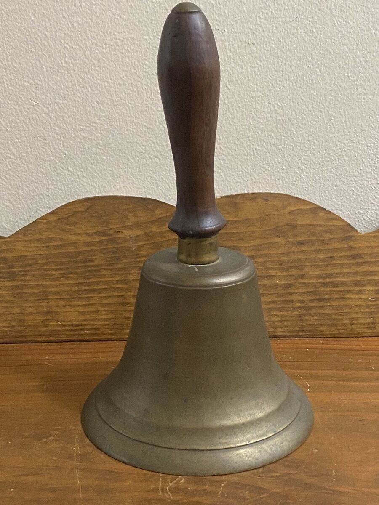

<!DOCTYPE html>  
<html lang=“en”>
<head>
    
</head>
<title></title>
</html>
<body> 

<h1> Irish Dancing </h1>

<nav>
    <ul>
        <li><a href="visual.html">Link to Visual Page</a></li>
    </ul>
</nav>
<!-- This is my link to my youtube page-->
</img>
<small><p>I do not own the rights of any visuals</p></small>
<q>  The rhythm of the reel mirrors the heartbeat of determination.</q>

<h1> What You Need For a Feis</h1>
<ul> 

    <li> Hard Shoes </li>
        <li> Wigs</li>  
        <li> Solo Dresses </li> 
        <li> Poodle Socks</li>
        <li> Sock Glue </li>
        <li> Crown </li>
        <li> Makeup</li>
        <li> Positive Attitude </li>
    
</ul>
</image>

<h1>The Morning of a Feis Steps</h1>
<ol>
    <li>  Wake up and eat a healthy breakfast</li>
    <li>Get ready to do your hair and makeup</li>  
    <li> Get out your dress and your shoes </li> 
    <li> Make sure your shoes are pollished</li>
    <li> Stretch and listen to your music</li>
    <li> Put on your wig, dress, and crown </li>
    <li> Make sure your socks are glued and your shoes are tied tight</li>
    <li> Your ready to check into the Feis</li>
<!-- This is creating a number list-->
</img>
<ol>
<body> If you are not familiar with what a Feis is here is some information. A Feis is an Irish Dance competetion that 
    has three judges. At these types of competitions dancers have the opportunity to become a a champion level dancer. 
    They are typically bigger than one judge competitions which are called <b>Feilie's </b>. When a dance is over at these 
    competitions the judges ring a bell which is what ends a dance. 
</body>
</ol>
</img> 
<ol>
<body>If you want more information that is not from me, this website below provides some more information. </body> 
</ol>
<mark><a href="https://emerald-heritage.com/blog/2018/how-irish-dancing-was-invented"> Irish Dance History </a></mark>
<!-- This is my link to an external website-->
<h1>Irish Music</h1>
<body>Irish dance <b>music </b> is a lot different than typically dance competiton music</body>
<ul>
<li>Traditonal </li>
<li>Reel</li>
<li>Slip Jig</li>
<li>Single Jig</li>
<li>Light Jig</li>
<li>Treble Jig</li>
<li>Hornpipe</li>
</ul>
<body>To the right is a part of an auto track of music that is played at an Irish Dance Feis </body>
<audio controls> <source src="irish-dance-199572.mp3"> </audio>
<!-- This is an audio file that can be played in the website-->
<br>
<h1>What does Irish dancing Look Like </h1>

<body>A lot of people know what Irish dance is but what does is really look like. 

</body>
<body>There are a lot of different types of dances that are performed during these Feis's. These Include:</body>
<ul>
<li>Light shoe dances</li>
<li>Hard shoe dances</li>
<li>Team dances</li>
<li>Ceili dances</li>
<li>Set dances</li>
</ul>

<h1>Covid 19 Impact</h1>

<body>Covid19 left a huge impact on the competive Irish Dancing world. With the inability to me in person to dance, the Feis world
    switched to going <b> virual.</b> They began holding virual Feises where dancers would sumbit videos of their dancing from home.
Which are then watched by judges online.  </body>

<Body>Below is a video of a dancer creating a film to sumbit for an online Feis. This was filmed in her basement which 
    is what she had acess to dance in during this time. 
</Body>
<video controls> <source width="200" height="175" src="Champ Reel 548 (1).mp4"></video>
<!-- This is an imbetted video in the form of a mp4 file-->
